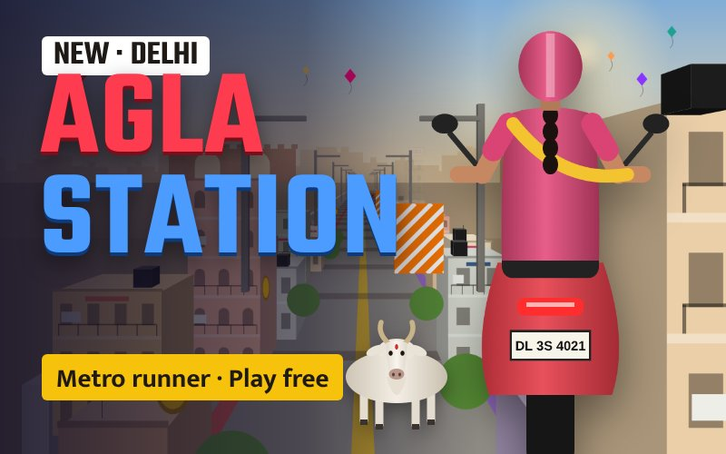

▶ Play freeAgla Station
A Delhi Metro runner game. Dodge the rush-hour crowd, answer quiz gates over the rooftops and catch the last train home. Play as a boy or a girl, on foot or on a scooty.
The Delhi stations
1. Chandni Chowk, Rush Hour. Your first day in Delhi. Dash down a packed underground platform past commuters and luggage, then run the tunnel to the next stop.
2. Kashmere Gate, Quiz Run. Three metro lines meet here. Your train climbs into the open over Old Delhi, and quiz boards ask about the metro. Run into the right answer for bonus coins.
3. Hauz Khas, Night Run. A late-night ride high above South Delhi with Qutub Minar on the skyline, then underground for the last train home.
Next stop: Qutub Minar. More stations and more Indian metro cities are on the way.
How to play
Phone
Swipe left or right to change lanes. Swipe up or tap to jump. Swipe down to slide.
Keyboard
← → change lanes · ↑ or Space jump · ↓ slide · P pause
Score
Collect ₹ coins, keep your 3 hearts and earn up to 3 stars per station. Crash and you restart from the last checkpoint.
Your rider
Choose boy or girl, type your name, ride on foot or on a scooty, and switch on Night mode for any station.